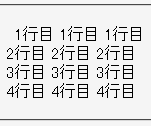
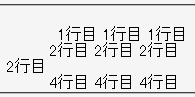

left以外の値が指定されたfloatプロパティかtext-alignプロパティが親要素に指定されているとき、右パディングと が指定され内容物の末尾にbr要素がある要素の周辺のレイアウトが乱れる。white-space: nowrap;
<p style="text-align:center;">1行目 1行目 1行目<br> 2行目 2行目 <span style="padding-right:1px;">2行目<br></span> 3行目 3行目 3行目<br> 4行目 4行目 4行目</p>
1行目 1行目 1行目
2行目 2行目
2行目
3行目 3行目 3行目
4行目 4行目 4行目
2行目の末尾に問題を起こす形式の要素を置いています。
Moz1.0.2での表示（標準モード）
Opera7.03での表示（互換モード）
右パディングだけが設定された状態でレイアウトの乱れが最も大きくなります。同時に左パディングを設定するとこのバグを回避できます。
<p style="text-align:center;">1行目 1行目 1行目<br> 2行目 2行目 <span style="padding:0 1px;">2行目<br></span> 3行目 3行目 3行目<br> 4行目 4行目 4行目</p>
1行目 1行目 1行目
2行目 2行目
2行目
3行目 3行目 3行目
4行目 4行目 4行目
Opera7.03では標準・互換モードの両方で不具合の発生が確認されました。